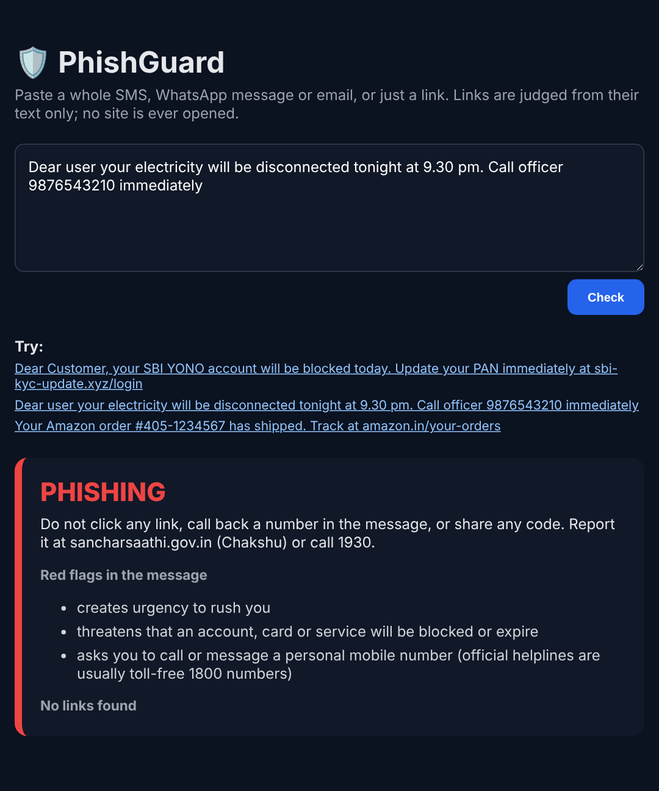
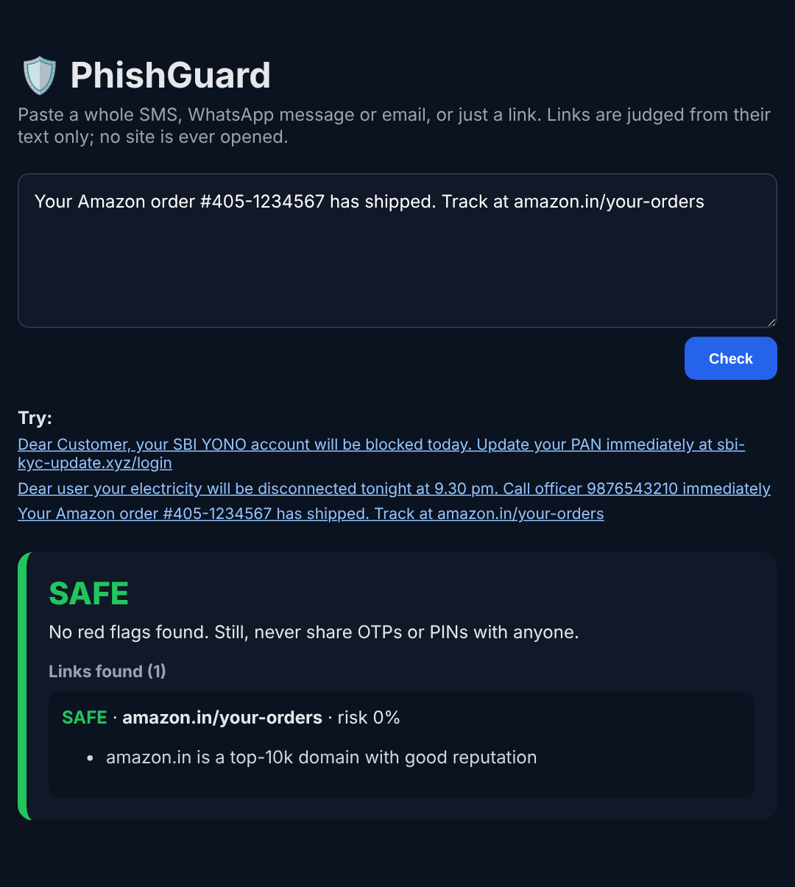

T1566.002Spearphishing link
Malicious links in SMS, WhatsApp and email, judged from the URL text alone.
Phishing & scam message detector for SMS, WhatsApp and email
Paste a whole message (or just a link) and get a verdict, the reasons in plain language and what to do next. Links are judged from their text alone, so the suspicious site is never opened. Ships as a REST API, a web checker, a CLI and a Chrome extension that warns you before you click.


• mentions a brand that is not the real domain • contains credential-related words (login, verify, account…) • uses a top-level domain popular with abuse • has many sub-domains (e.g. paypal.com.security-check.xyz)
Open it anyway? (Not recommended)
[01] ~/the-problem
“Your SBI KYC is expiring, update now: sbi-kyc-update.xyz/login.” Links like this arrive by SMS and WhatsApp every day, where there is no email security gateway to filter them.
Many Indian scams contain no link at all: “your electricity will be cut tonight, call officer 98xxxxxxxx”. People need a fast, private check that explains why, so they learn to spot the next one themselves.
The two models make different mistakes, so the ensemble adds about 5 points of recall on new phishing campaigns, which is the scenario that matters.
[02] ~/how-it-works
Two complementary URL models, a reputation layer, and scam-wording rules for messages without links.
Extracts URLs and bare domains such as sbi-kyc-update.xyz/login, while ignoring amounts (Rs.2,500.00), times (9.30 pm) and e-mail addresses.
37 hand-crafted features: brand outside the real domain, credential words, punycode, IP hosts, shorteners, free hosting, risky TLDs. These drive the plain-language reasons.
1–5-gram TF-IDF + Logistic Regression learns obfuscation such as paypa1, rn → m and random sub-domains.
Top-10k domains are trusted, except shared-hosting platforms (Blogspot, Firebase, shorteners) where anyone can publish.
English + Hinglish patterns: OTP/PIN/CVV requests, urgency, account-block threats, KYC/PAN/Aadhaar updates, prize bait, “call this mobile number”.
FastAPI /check and /check_message, a web checker, a CLI and a Chrome extension that checks every external link before you continue.
[03] ~/threat-coverage
What the checker is built to catch, mapped to MITRE ATT&CK.
Malicious links in SMS, WhatsApp and email, judged from the URL text alone.
Requests for an OTP, PIN or CVV, and “update your KYC / PAN / Aadhaar” lures.
Messages posing as a bank, power company or “officer”, often with a personal mobile number to call.
[04] ~/results
20% stratified hold-out (23,987 URLs), then a cross-source test on a phishing feed never seen in training.
| MODEL | ACCURACY | PRECISION | RECALL | FPR | UNSEEN-FEED RECALL |
|---|---|---|---|---|---|
| XGBoost (lexical) | 93.5% | 94.5% | 92.5% | 5.4% | 83.4% |
| LogReg (char n-grams) | 97.3% | 98.0% | 96.5% | 2.0% | 82.0% |
| Ensemble | 97.4% | 98.1% | 96.6% | 1.9% | 87.9% |
| Ensemble + reputation | 97.3% | 98.3% | 96.4% | 1.7% | – |
Most important lexical signals: credential words (21%), TLD length and risky TLDs (17%), brand-not-in-domain (10%), script/executable endings (9%).
Whole-message checks: all 8 realistic test messages (4 genuine, 4 scams, including scams with no link) get the right verdict. That is a small hand-written set, not a benchmark.
HONEST LIMITS
— Lexical analysis can’t see page content: a clean-looking URL on a compromised legitimate site will pass, which is why borderline scores say “suspicious”, not “safe”.
— The benign URLs are older (DMOZ-era). The message rules were checked on a small realistic set, not a labelled benchmark.
WHAT I’D DO NEXT
→ Retrain with a fresh benign crawl for better calibration
→ Build a labelled benchmark of Indian scam SMS / WhatsApp messages
→ Ship the extension to the Chrome Web Store with a hosted API